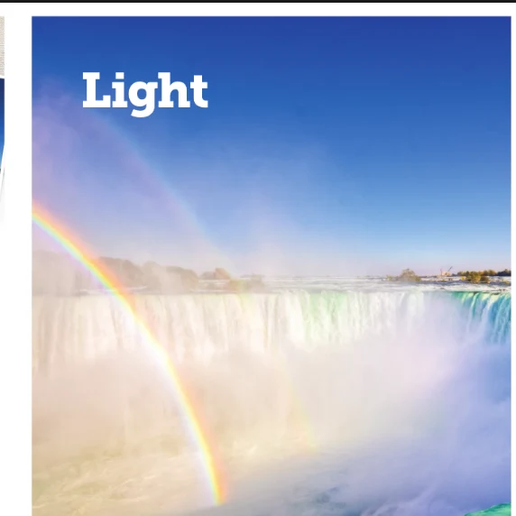
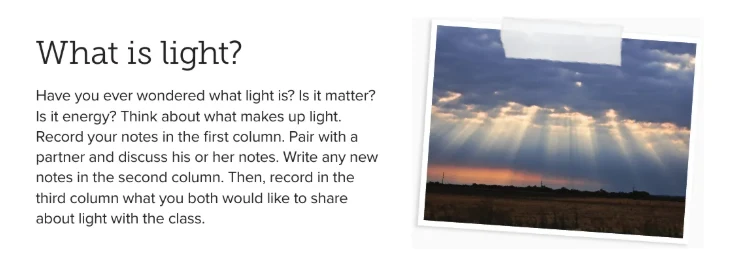
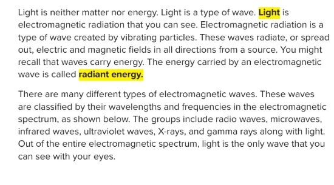
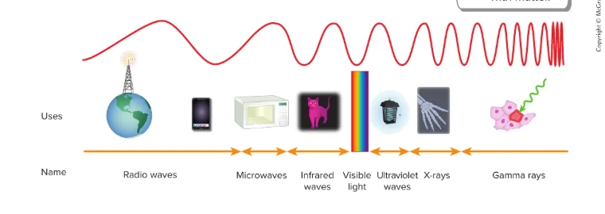
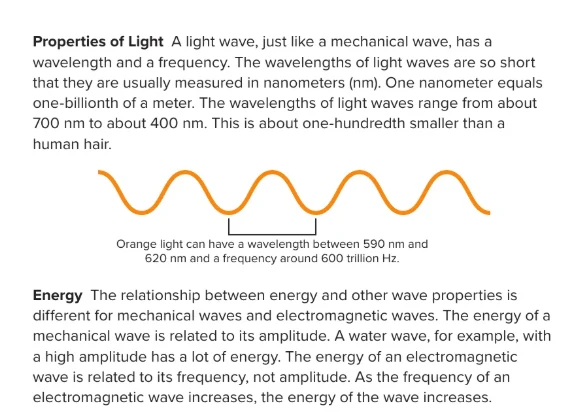
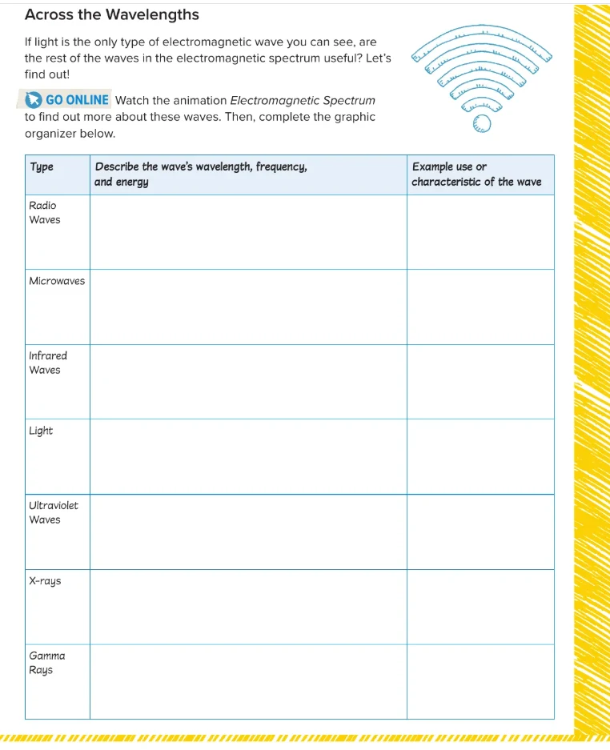

What Is Light?
Lesson 1 · How Light Travels: the electromagnetic spectrum
 UAE NATIONAL CHARTER · الميثاق الوطني
UAE NATIONAL CHARTER · الميثاق الوطنيTerm 1 at a glance
Grade 8 Advanced Science · We are starting Unit 2, Module 2 (U2M2): Light, with Lesson 1: How Light Travels.

Meet your UAE Values Team
Five friends will coach you through today's light mission. Tap a character to discover their job today!
Lesson map · 45 minutes · tap any activity
Objectives, success criteria & key words
Explain what light is and describe the electromagnetic spectrum.
- I can explain that light is an electromagnetic wave that I can see.
- I can name the seven types of electromagnetic waves in order.
- I can give one use of each type of electromagnetic wave.
- I can state that light wavelengths are about 400–700 nanometres.
- I can explain that the energy of an electromagnetic wave depends on its frequency.
Kickoff: starter + attendance

- Say “present” and settle in your seat.
- Think: the Sun gives us light. What else does it give us that we can feel but not see?
- Answer the 5 true/false questions on the next slide on your own: no peeking at a friend's answer!
Pre-assessment: what do you know?
Hook: the Hatta Dam rainbow
A sunny afternoon at Hatta Dam…
Saif stands on the path by the dam. The Sun warms his face. A rainbow appears in the spray of the waterfall. By the evening, his nose has a sunburn.
Scientists say all three came from the Sun as the same kind of wave.
So why could Saif only see the rainbow?

Watch: what is light?
A 2 min 10 s narrated video with subtitles. Turn the sound on, then listen for the family of waves that light belongs to.
- Light is not matter or energy. So what is it?
- Name the seven types of electromagnetic waves.
- What unit do we use for light's wavelength?
- What does the energy of an electromagnetic wave depend on?
What is light? Think · pair · share

Encounter: longer, visible or shorter?
Each picture uses an electromagnetic wave. Is its wavelength LONGER than visible light, is it VISIBLE light, or is it SHORTER? Tap each card to change it.
Light and the spectrum (the unconventional version)
Imagine a family of seven siblings who all travel at the same speed. They look different because their wavelengths are different. The eldest, radio, takes huge, lazy steps. The youngest, gamma, takes tiny, very fast steps and carries the most energy. Our eyes can only see one sibling in the middle: visible light.
Light is electromagnetic radiation that you can see. Electromagnetic waves are made by vibrating particles and carry radiant energy.
All the waves together make the electromagnetic spectrum, sorted by wavelength and frequency.
Textbook: light is a wave

Textbook: the electromagnetic spectrum

Textbook: properties of light and energy

Spectrum explorer: radio waves to gamma rays
Drag the slider or tap a wave. Watch the wavelength, frequency and energy change. Can you find the tiny band you can see?
Light in nanometres: find the colour
Light waves are tiny! We measure them in nanometres: 1 nm = 0.000 000 001 m, one-billionth of a metre. Visible light runs from about 700 nm (red) to 400 nm (violet).
Energy: amplitude or frequency?
Change one slider at a time. Which slider changes the energy of each wave?
Across the wavelengths: graphic organizer
Are the waves we cannot see useful? For each wave, choose its rank (1 = longest wavelength, lowest frequency, least energy … 7 = shortest wavelength, highest frequency, most energy) and an example use.

| Type | Rank 1–7 | Example use |
|---|---|---|
| Radio waves Longest wavelength, lowest frequency, least energy | ||
| Microwaves Long wavelength, low frequency, low energy | ||
| Infrared waves Longer than light; we feel it as heat | ||
| Light About 700–400 nm: the only waves we can see | ||
| Ultraviolet waves Shorter than light; more energy, can burn skin | ||
| X-rays Very short wavelength, high frequency, high energy | ||
| Gamma rays Shortest wavelength, highest frequency, most energy |
Rainbow lab: split light, then find the invisible
- Part A: stand the glass of water at the edge of a desk, on the white paper.
- Shine the torch (or let sunlight) through the water at an angle. Move the paper until you see a band of colours.
- Record the colours from top to bottom.
- Part B: point a TV remote at a phone camera and press a button. Look with your eyes, then look at the phone screen.
| Test | What did you observe? |
|---|---|
| Colours on the paper | A small rainbow: red, orange, yellow, green, blue, violet. White light is a mix of all the colours. |
| Remote: with your eyes | Nothing! The remote's infrared light is invisible to our eyes. |
| Remote: on the phone screen | A flashing light. Many phone cameras can detect infrared, which our eyes cannot. |
- Light-holder: holds the torch steady at an angle.
- Observer: moves the paper and describes the colours.
- Recorder: writes the observations in the table.
- White light from the torch or the Sun is really a mix of all the colours, each with its own wavelength (red ≈ 700 nm … violet ≈ 400 nm).
- When light passes from air into water (and out again), it slows down and bends. This bending is called refraction.
- Each colour bends by a slightly different amount: violet bends the most, red bends the least. So the colours spread out into a band: a spectrum.
- Rainbows in the sky (and in the spray at Hatta Dam) happen the same way: sunlight is split by millions of tiny water droplets.
- The remote sends its signal as infrared flashes. Infrared has a longer wavelength than red light (about 940 nm), so our eyes cannot detect it.
- A phone camera's sensor can detect some infrared. The phone shows it as visible light on the screen, so you see the flashes!
Pause and check
Formative check: tap an answer. Wrong? Read the hint and try again!
Put the spectrum in order
Order the waves from longest wavelength (1) to shortest wavelength (7). Say the order with your partner, then tap the waves in order. Tap a numbered wave to undo.
Critical thinking: claim · evidence · reasoning
What is light? worksheet (1/2)
B. One-billionth of a metre
C. Electromagnetic radiation that you can see
D. All the electromagnetic waves, sorted by wavelength and frequency
E. A wave made by vibrating particles that spreads electric and magnetic fields
What is light? worksheet (2/2)
| Compare | More energy |
|---|---|
| Radio waves or X-rays | |
| Infrared or ultraviolet | |
| Microwaves or visible light | |
| Gamma rays or infrared | |
| Red light (700 nm) or violet light (400 nm) | |
| Ultraviolet or radio waves |
Why could Saif see the rainbow, but not the warmth (infrared) or the sunburn rays (ultraviolet)? Use wavelength, visible and energy.
✓ The warmth, the rainbow and the sunburn rays are all electromagnetic waves from the Sun, with different wavelengths.
✓ Our eyes can only detect visible light (about 700–400 nm). Infrared is longer and ultraviolet is shorter, so we cannot see them.
✓ Ultraviolet has a higher frequency, so it carries more energy: enough to burn skin.
Green, orange or purple? Choose your level
Green · Support
- Complete: “Light is an ____ wave that we can see.”
- Circle: radio waves have the longest / shortest wavelength.
- True or false: we can see X-rays.
- Give one use of microwaves.
1. electromagnetic
2. longest
3. False
4. Cooking food, Wi-Fi or mobile phones
Orange · At level
- List the seven electromagnetic waves from longest to shortest wavelength.
- How is the energy of an electromagnetic wave different from the energy of a water wave?
- Write 550 nm in metres.
1. Radio, microwaves, infrared, visible light, ultraviolet, X-rays, gamma rays.
2. A water wave's energy depends on its amplitude; an electromagnetic wave's energy depends on its frequency.
3. 0.000 000 55 m (550 billionths of a metre).
Purple · Challenge
- A human hair is about 70,000 nm wide. About how many 700 nm red-light waves fit across it?
- Why should you wear sunscreen at the beach, even when you cannot see the rays that burn?
- Why are radio waves used to send signals all over the UAE, but gamma rays are used to kill cancer cells?
1. 70,000 ÷ 700 = 100 waves.
2. Ultraviolet is invisible but has a high frequency and high energy, so it can damage skin.
3. Radio waves carry little energy, so they are safe to fill the air with. Gamma rays carry so much energy that they can destroy cells.
Summative: Light Master quiz
Mystery solved!
The warmth, the rainbow and the sunburn were all ELECTROMAGNETIC WAVES from the Sun. The warmth was infrared, with wavelengths longer than light. The sunburn came from ultraviolet, with wavelengths shorter than light. Saif's eyes can only detect VISIBLE LIGHT, about 700–400 nm, so he only saw the rainbow. Ultraviolet has a higher frequency, so it carries more energy: enough to burn his skin. Time for sunscreen!
I can explain that light is an electromagnetic wave that I can see.
I can name the seven types of electromagnetic waves in order.
I can give one use of each type of electromagnetic wave.
I can state that light wavelengths are about 400–700 nanometres.
I can explain that the energy of an electromagnetic wave depends on its frequency.
Which value did you show today?
Tap the character whose value you showed in this lesson. Then tell your partner one real example!
Shine bright, Grade 8!
Some of the most powerful waves are the ones we cannot see. Your hard work is the same: keep shining, even when no one is watching!

 National Identity
National Identity Lifelong Learning
Lifelong Learning CooperationInnovation
CooperationInnovation Excellence
Excellence